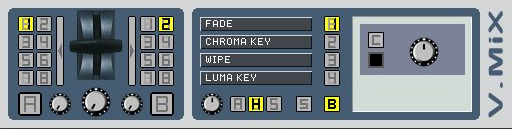

eleKtroniKa
help file
vmix module (mixer)
mix 2 video streams using a variety of transitions

input/output
8 audio in
8 video in
receive a, receive b
1 video out
send a, send b
audio out
properties
buttons [1-8]
select the source inputs for left and right channels
cross fader. mix the two inputs selected
auto fade A-B and B-A (one shot)
transition control
pulse mix left source, adjust source a
pulse mix right source, adjust source b
select the transition [1-4]
fade. fade aspect, fade colour and cut mode
chroma key. choose chroma key
wipe. select wipe type and wipe from selection panel on right
luma key
video. choose video source as mask and select red, green or blue channel
fade/blur (could use a third video source as mask)
copyright aestesis
2005
www.aestesis.org